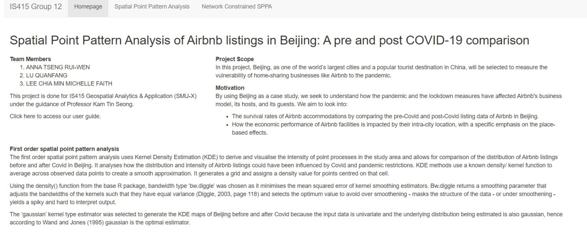
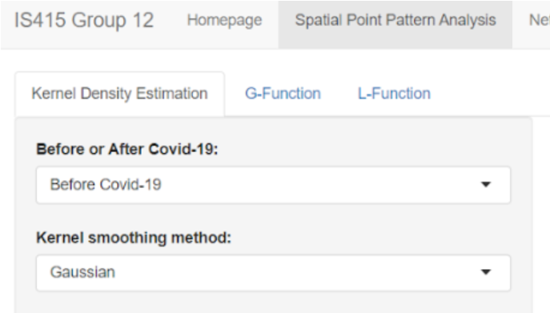
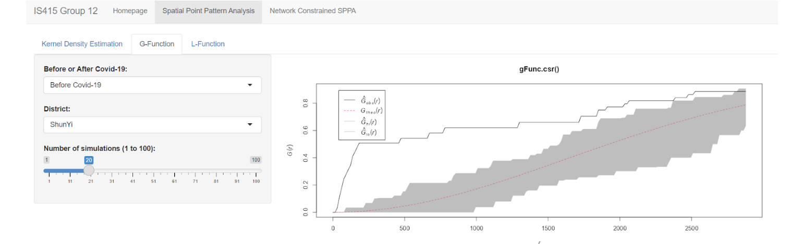
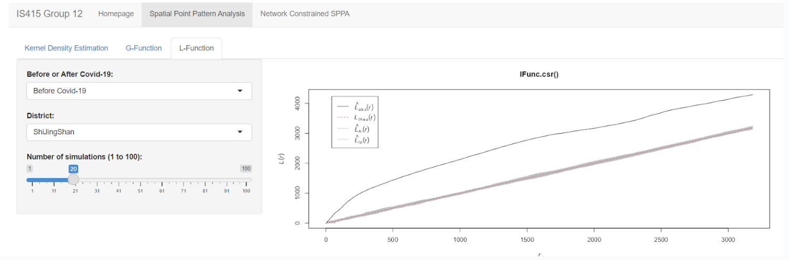
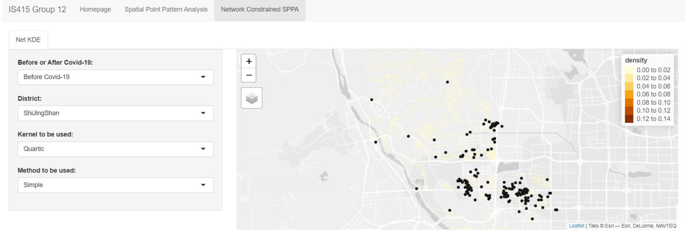

User Guide for R Shiny application
User Guide to Spatial Point Pattern Analysis of Airbnb listings in Beijing
Check out our R Shiny application here!
Home Tab

This is our home tab where you could have a quick understanding and overview of our project, what is about, motivation and the function available
Spatial Point Pattern Analysis (SPPA)
Our sub tab includes the following as shown below:
Kernel Density Estimation Tab
G - function
L- function

Kernal Density Estimation
In the Spatial Points Pattern Analysis tab, please wait for a few minutes for the application and graphs to load. You should be able to see a Spatial Points Map showing the Raster Density Map of the airbnb listings in Beijing before the covid, you could also see the Map for after the covid by clicking on the dropdown box under 'Before or After Covid'
You could configure your own analysis by setting or adjusting the following parameters:
District ( to select which district you would like to focus on for analysis)
Kernel smoothing method (choose from Gaussian, Epanechnikov, Quartic, Disc)
G function

Under the G-function tab, you can visualise the spatial distribution of the point features as well as configure our own analysis by setting or adjusting the following parameters:
District ( to select which district you would like to focus on for analysis)
Number of simulations
L function

Under the L-function tab, you can visualise the spatial distribution of the point features as well as configure our own analysis by setting or adjusting the following parameters:
District ( to select which district you would like to focus on for analysis)
Number of simulations
Network Constrained SPPA

In the Network Constrained SPPA tab, please wait for a few minutes for the application to load. You should be able to see a Network Constrained KDE Map of the Airbnb listings in Shijingshan District on the Shijingshan Road network before the Covid, you could also see the Map for after the Covid by clicking on the dropdown box under 'Before or After Covid'.
You could configure your own analysis by setting or adjusting the following parameters:
District ( to select which district you would like to focus on for analysis)
Kernel smoothing method (choose from Gaussian, Epanechnikov, Quartic, Disc)
Method to be used (Simple, Continuous, Discontinuous)